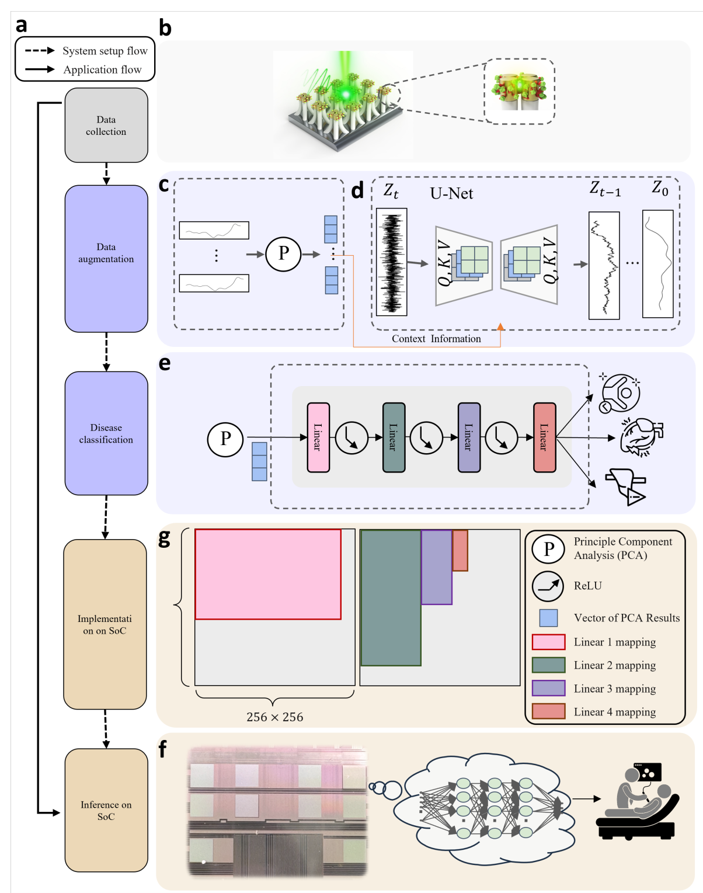
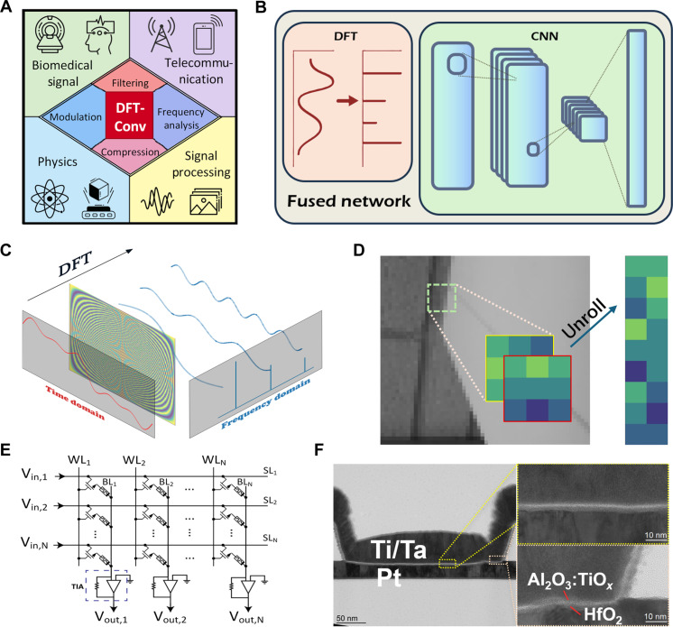

Zihan Wang
I am a Ph.D. student in Computer Engineering at the University of Southern California, co-advised by Prof. J. Joshua Yang and Prof. Peter A. Beerel. I received my B.E. in Computer Science and Technology from Southeast University in 2023.
My research focuses on efficient and reliable vision and multimodal AI. My work spans representation learning, efficient inference, and hardware-aware model adaptation. At the Bosch Center for Artificial Intelligence, I worked on trajectory generation and scoring for end-to-end driving.

News
-
Our paper “On-chip Training and Planning with Cognitive Maps on a Memristive Chip” was accepted for publication in Nature.
-
Started a research internship at the Bosch Center for Artificial Intelligence, working on end-to-end driving.
-
Our paper on real-time signal processing with a memristor chip was published in Science Advances.
-
Our paper on multi-disease detection with a memristive system-on-chip was published in Advanced Intelligent Systems.
-
Posted a preprint on multi-disease detection on arXiv.
Selected Publications
All publications on Google Scholar-
Multi-Diseases Detection with Memristive System on Chip
Advanced Intelligent Systems, 2025 arXiv

-
Real-time Signal Processing Enabled by Fused Networks on a Memristor-based System on a Chip
Science Advances, 2025

Education
-
Ph.D. in Computer Engineering
– Present
University of Southern California, Los Angeles, CA
-
B.E. in Computer Science and Technology
–
Southeast University, Nanjing, China
Experience
-
Research Intern
–
Bosch Center for Artificial Intelligence, Sunnyvale, CA
Mentor: Feng Tao
-
Graduate Research Assistant
– Present
University of Southern California, Los Angeles, CA
EESSC Group and Yang Research Group
Interests
- Music
- Oreo, my dog